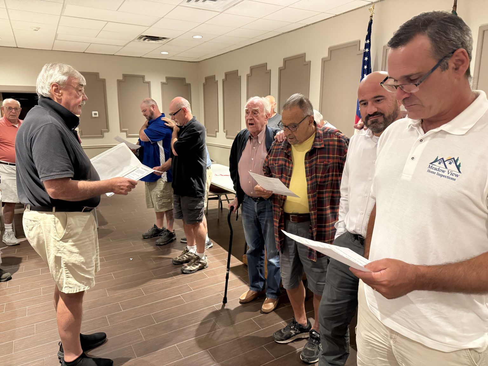

For our members
Your center.
Your connections.
A handy place for the resources that keep you connected.
Secure member access
Head to the member portal.
Sign in through the center’s existing member portal to access your member account.
You’ll continue to the secure login on theitaliancenter.com.
Open member login